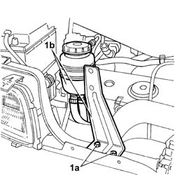
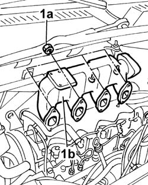

1072B11 INTAKE MANIFOLD - R R AND REPLACE GASKET FOR VERSIONS WITH AIR CONDITIONER
- Path
- Procedures > 10 ENGINE UNIT > 1072 INLET AND EXHAUST MANIFOLDS > 1072B INLET MANIFOLDS > 1072B11 INTAKE MANIFOLD - R R AND REPLACE GASKET FOR VERSIONS WITH AIR CONDITIONER
- Kind
- repair procedure (removal / refitting; the operation number is the code)
- Applies to
- engines: 2.8 JTD 8V; all production periods
- Interactive page
- https://sloeber94.github.io/elrnDB-fDct/en/#/244000872
Applies to: engines: 2.8 JTD 8V; all production periods
 Removing
Removing
 Refitting
RefittingOp. 0010T20 COOLANT CHECK DENSITY AND TOP UP IF NECESSARY
See in Op. 1088B10
See in Op. 1080C17
See in Op. 1080C16
See in Op. 1048A21
See in Op. 1048B22
See in Op. 1048B14
Op. 1088D67 COOLANT PIPE BETWEEN COOLANT RESERVOIR AND THERMOSTAT - R.R.
1. Undo the fixing bolts (1a) and move the power assisted steering reservoir complete with bracket (1b) away from the work area.

Applies to: engines: 2.8 JTD 8V; all production periods
See in Op. 1016A10
Op. 7055B54 UNDER-ENGINE GUARD - R R
See in Op. 1080C10
Op. 1080C50 PIPE CARRYING EXHAUST GAS TO E.G.R. VALVE - R + R
See in Op. 1080C80
1. Undo the fixing nuts (1a) and remove the intake manifold (1b).

Applies to: engines: 2.8 JTD 8V; all production periods
Refitting
Removing- Fit a new intake manifold gasket in place.
- Fit the intake manifold in position and tighten the fixing nuts checking the torque.
 | Value - daNm | Fastening | Component | Ø |
|---|---|---|---|---|
. | 2,5 | Nut | INLET MANIFOLD | M8 |
See in Op. 1080C80
Op. 1080C50 PIPE CARRYING EXHAUST GAS TO E.G.R. VALVE - R + R
See in Op. 1080C10
Op. 7055B54 UNDER-ENGINE GUARD - R R
See in Op. 1016A10
Op. 1088D67 COOLANT PIPE BETWEEN COOLANT RESERVOIR AND THERMOSTAT - R.R.
See in Op. 1048B14
See in Op. 1048B22
See in Op. 1048A21
See in Op. 1080C16
See in Op. 1080C17
See in Op. 1088B10
Op. 0010T20 COOLANT CHECK DENSITY AND TOP UP IF NECESSARY
- Position the power assisted steering fluid reservoir and tighten the bolts fixing it to the crossmember.
Topics linked from this page (4)
- 0010T20 COOLANT CHECK DENSITY AND TOP UP IF NECESSARY
- 1080C50 PIPE CARRYING EXHAUST GAS TO E.G.R. VALVE - R + R
- 1088D67 COOLANT PIPE BETWEEN COOLANT RESERVOIR AND THERMOSTAT - R.R.
- 7055B54 UNDER-ENGINE GUARD - R R